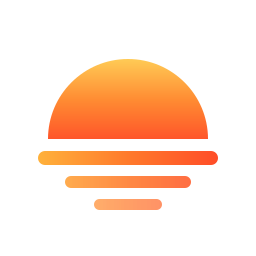

Afterglow
상태 예시
[ ◐ ]
라이트
애니메이션 일시정지
YOUR CLOUD. YOUR NEXT CHAPTER.
생각에서 실행까지,
하나의 워크스페이스.
컴퓨트, 네트워크, 스토리지와 AI.
당신의 다음 작업을 Afterglow에서 시작하세요.
NOVA
/
NEUTRON
/
CINDER
/
LUMEN
: : CLOUD WORKSPACE : :
로그인으로
모든 예시 ↗